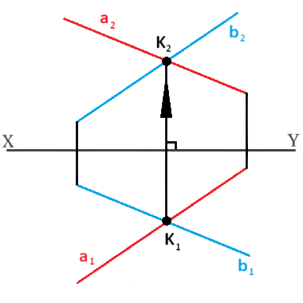
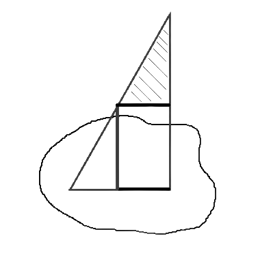

★ წრფეებს ერთმანეთის მიმართ, შესაძლებელია, ჰქონდეთ ურთიერთპარალელური, ურთიერთმკვეთი ან აცდენილი მდებარეობა.
თუ ორი წრფე პარალელურია სივრცეში, მაშინ ნახაზზე პარალელურია მათი ერთსახელა გეგმილები.
თუ ორი წრფე იკვეთება სივრცეში, მაშინ ნახაზზე იკვეთება მათი ერთსახელა გეგმილებიც, ხოლო გეგმილების გადაკვეთის წერტილები წარმოადგენ სივრცეში წრფეების გადაკვეთის წერტილის გეგმილებს, ანუ მდებარეობენ ღერძის საერთო მართობზე.

თუ ორი წრფე აცდენილია სივრცეში, მაშინ შესაძლებელია მათი ერთსახელა გეგმილები იკვეთებოდნენ, მაგრამ გადაკვეთის წერტილები ღერძის საერთო მართობზე არ მოთავსდება.
თარაზულ გეგმილზე ხილვადობას განსაზღვრისთვის თარაზული გეგმილების გადაკვეთის წერტილიდან გავატაროთ x-ღერძის მართობი ორივე წრფის შვეული გეგმილის გადაკვეთამდე. შვეულ გეგმილზე რომელი წერტილიც შორსაა x-ღერძიდან, ანუ რომლის ƶ-კოორდინატიცაა მეტი, თარაზულ გეგმილზე ხილვადი ის წერტილია (შვეულ გეგმილზე ხილვადობა ანალოგიურად განიხილება).
წრფის მონაკვეთის ნამდვილი სიდიდის განსაზღვრა და დახრის კუთხეები გეგმით სიბრტყეებთან
★ წრფის მონაკვეთის ნამდვილი სიდიდის საპოვნელად რომელიმე გეგმილზე ავაგოთ მართკუთხა სამკუთხედი. მეორე კათეტი იქნება მოპირდაპირე გვერდის გეგმილის x-ღერძიდან დაშორებათა ალგებრული სხვაობა. ჰიპოტენუზა წარმოადგენს წრფის მონაკვეთის ნამდვილ სიდიდეს.

სიბრტყის ასახვა ბრტყელ ნახაზზე
ზოგადი და კერძო მდებარეობა სიბრტყეებზე
★ სივრცეში სიბრტყე განისაზღვრება ერთ წრფეზე არამდებარე სამი წერტილით. ნახაზზე თვალსაჩინოებისთვის, სიბრტყეს ასახავენ ამ სამ წერტილზე გამავალი ბრტყელი ნაკვთის გეგმილებით ან შესაბამის წერტილებზე გამავალი პარალელური თუ მართობული წრფეებით.
★ სიბრტყეს, რომელიც დახრილია სამივე გეგმით სიბრტყის მიმართ, ეწოდება ზოგადი მდებარეობის სიბრტყე.
კერძო მდებარეობის სიბრტყეები
★ სიბრტყეს, რომელიც მართობულია გეგმით სიბრტყის მიმართ, ეწოდება მაგეგმილებელი სიბრტყე.
თარაზული გეგმით სიბრტყის მართობულ სიბრტყეს ეწოდება თარაზულად მაგეგმილებელი სიბრტყე და მისი ყველა წერტილი თარაზულ გეგმილზე მოთავსდება ერთ წრფეზე.
შვეული გეგმით სიბრტყის მართობულ სიბრტყეს ჰქვია შვეულ-მაგეგმილებელი სიბრტყე და მისი შვეული გეგმილი წრფეა.
პროფილური გეგმით სიბრტყის მართობულ სიბრტყეს ეწოდება პროფილურად მაგეგმილებელი სიბრტყე. მისი პროფილური გეგმილი არის წრფე.